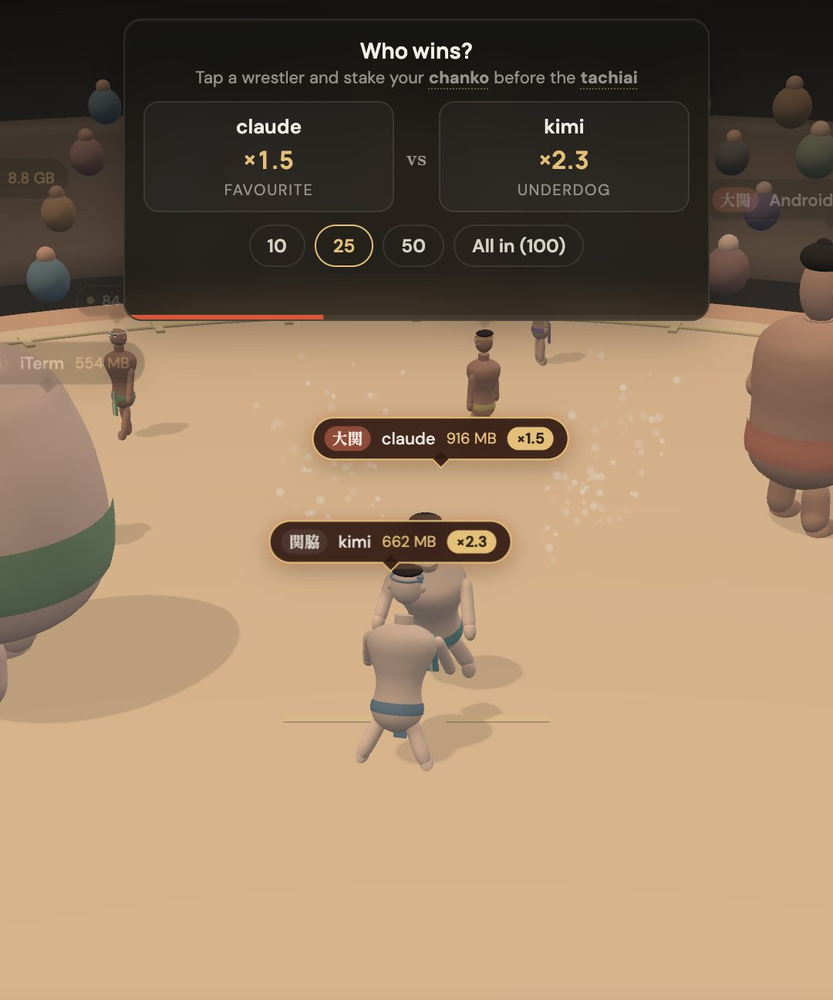
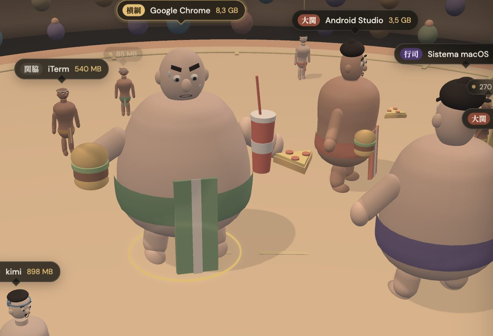
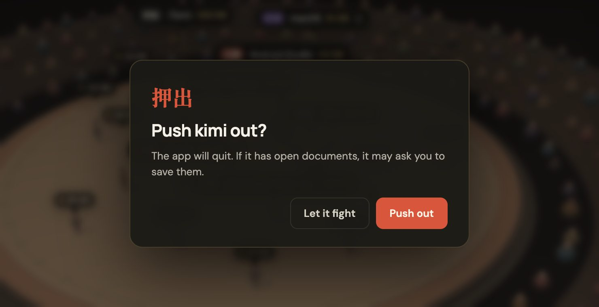
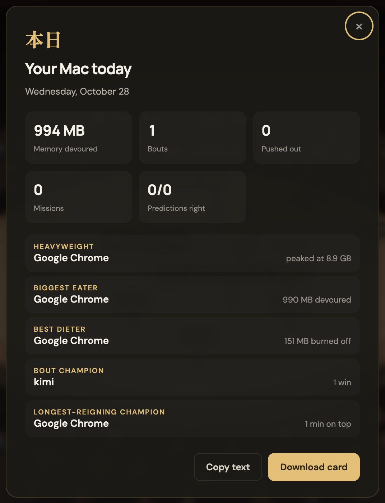
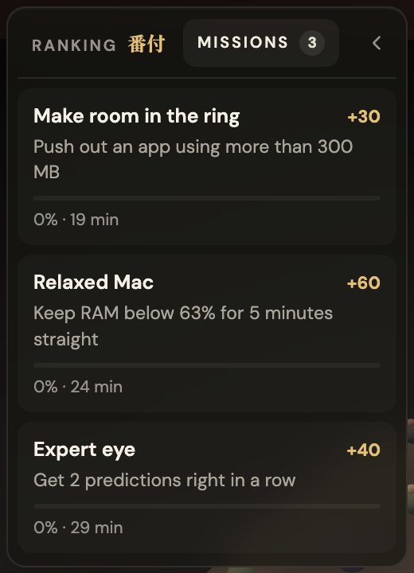
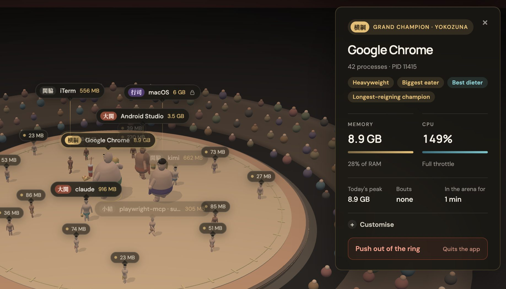
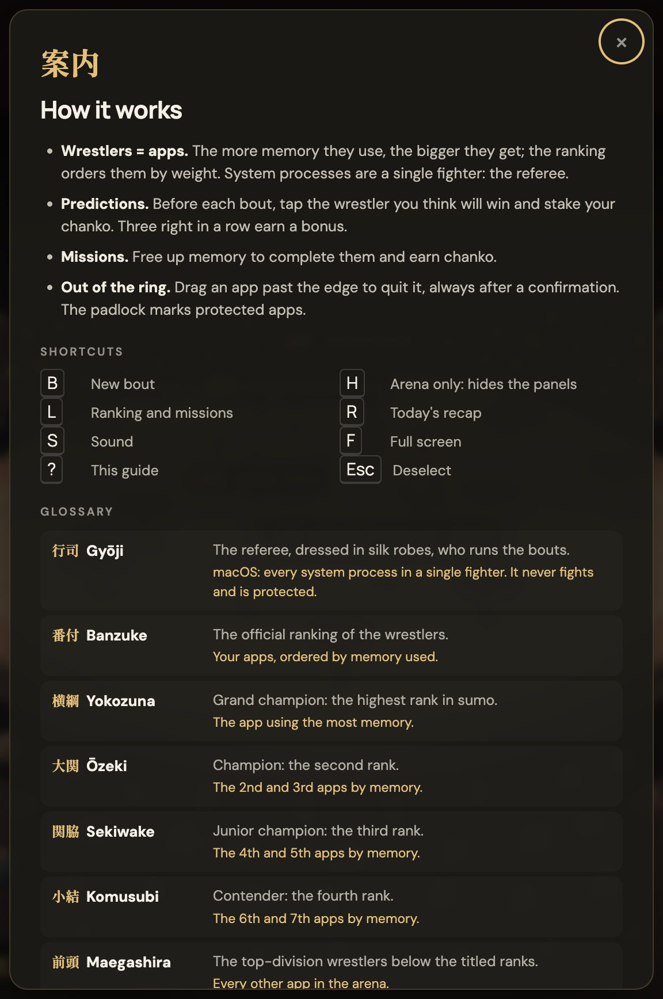
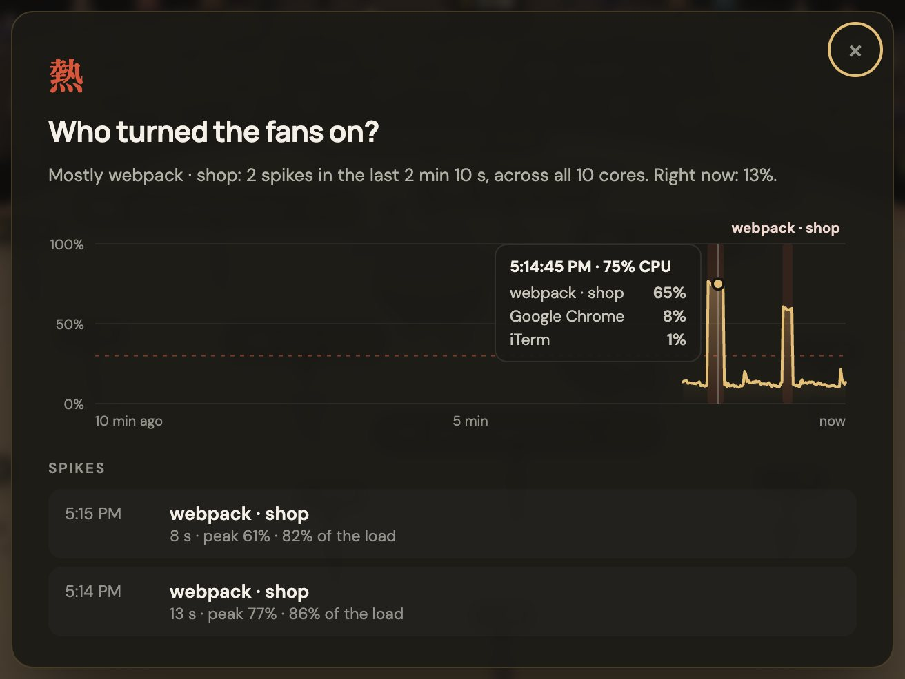
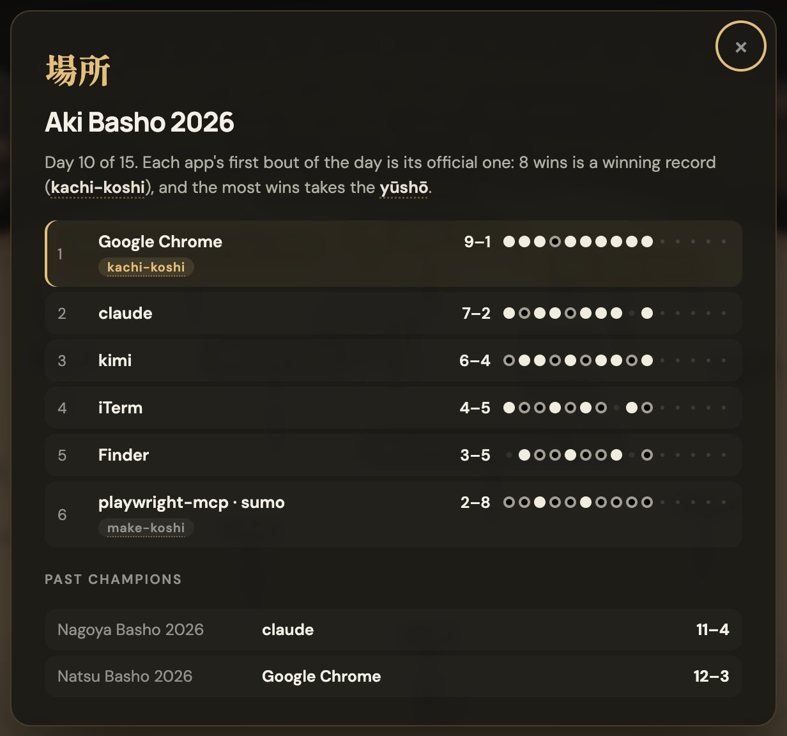

Every app is a wrestler
Weight is RAM, live every second. When an app asks for memory its wrestler eats a burger; when it frees some, it does the shiko, the ritual stomp.
Every app becomes a wrestler: the more memory it uses, the bigger it gets. Watch them eat as they grow, face off in the ring, and make your predictions. And if one gets too heavy, drag it out of the ring to quit it.
$ brew install vikey89/tap/sumo
sumo: a tab opens, and that's it.
You don't need to know anything about sumo: the arena explains itself, and on first launch a five-step tour walks you through the real interface.
Weight is RAM, live every second. When an app asks for memory its wrestler eats a burger; when it frees some, it does the shiko, the ritual stomp.
The banzuke orders apps by weight: the heaviest is the Yokozuna, then Ōzeki, Sekiwake, Komusubi. When the champion changes, confetti rains down.
Drag a wrestler past the edge to quit the app. It always asks first, and system apps wear a padlock: they can't be touched.
Every so often two apps face off in the ring. You have a few seconds before the tachiai, the opening charge, to tap your pick and place a bet.

These aren't bars in a chart: they're characters. Each one has its own face, build and belt colour.

Grab the wrestler, drag it past the straw bales and confirm. SUMO asks the app to quit politely, so it can still ask you to save.

Processes from node, python, java, ruby, bun, deno and other runtimes are named after what they're actually running, and the project they started from.
node_modules packages, python -m, .jar files, Java classes and scripts.Missions challenge you to actually free up memory, and at the end of the day the recap tells you how things went in the ring.


Tap a wrestler: the camera follows it and its card opens with memory, CPU, today's peak, bouts won and the titles it has earned.

Banzuke, chanko, tachiai: the real terms stay, but each one has a tooltip and a glossary entry explaining what it means in sumo and what it means in the game.

The engine keeps the last ten minutes of CPU, even before you open the arena. Press C and every spike gets a name: which app, how long, and how much of the load was its fault.
webpack · shop.
Like real sumo, every basho lasts fifteen days. Each app's first bout of the day is its official one; the rest are exhibition. Press T for the standings.

Don't feel like opening a tab? sumo top shows the banzuke live in your terminal: like top, but with sumo ranks.
vite · shop, not yet another node.sumo top | head.Warm lights when the Mac is light; as RAM fills up, the arena turns red and starts to pulse.
A macOS alert when an app goes past 8 GB or RAM passes 90%, naming the culprit. Never more than one in a while.
Press H and only the ring and the crowd remain: perfect full screen on a second monitor.
30 frames per second when the arena is quiet, 60 during bouts. The engine uses about 2% CPU.
The bout gong and the cheering crowd, if you want them. The app asks you just once.
With the macOS accessibility setting on: no zoom, shakes, slow motion or particles.
No app to drag into Applications. sumo starts the engine in the background, opens the arena in your browser and gives you the prompt back. Close the tab and it stops by itself. No Homebrew? The curl installer checks the download's SHA-256 and puts sumo in ~/.local/bin, no sudo.
$ brew install vikey89/tap/sumo ==> Installing sumo 🍺 /opt/homebrew/Cellar/sumo/0.1.0: 3 files, 7.3MB $ sumo 相撲 Arena open at http://127.0.0.1:3001. It stops by itself when you close the tab, or run: sumo stop $ sumo status SUMO is running at http://127.0.0.1:3001 (pid 8180). $
top but with sumo ranks. No browser needed.An app that sees all your processes and can quit them has to be very careful. SUMO is.
The engine only listens on 127.0.0.1. No account, no external server: process data never leaves.
Every request is checked: no random web page can read your processes or quit apps, not even with DNS rebinding.
Every app you quit goes through a confirmation. The operating system, other users' apps and SUMO itself are protected.
For developer processes only the tool and folder names come out: tokens and arguments stay where they are.
You'll find them in the arena, each with its own tooltip.
Install SUMO, type sumo and find out who your Mac's Yokozuna is.